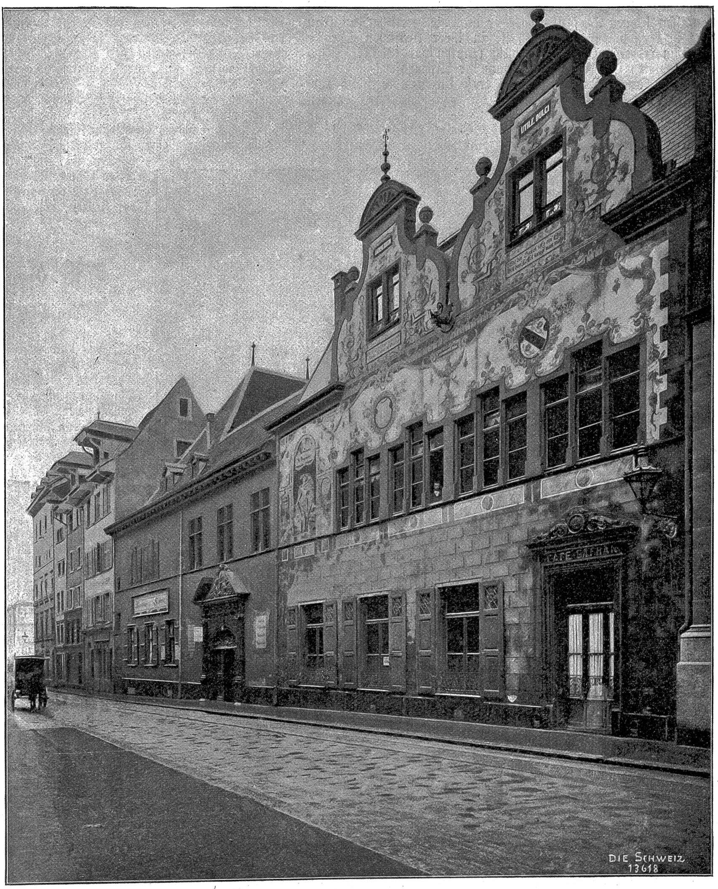
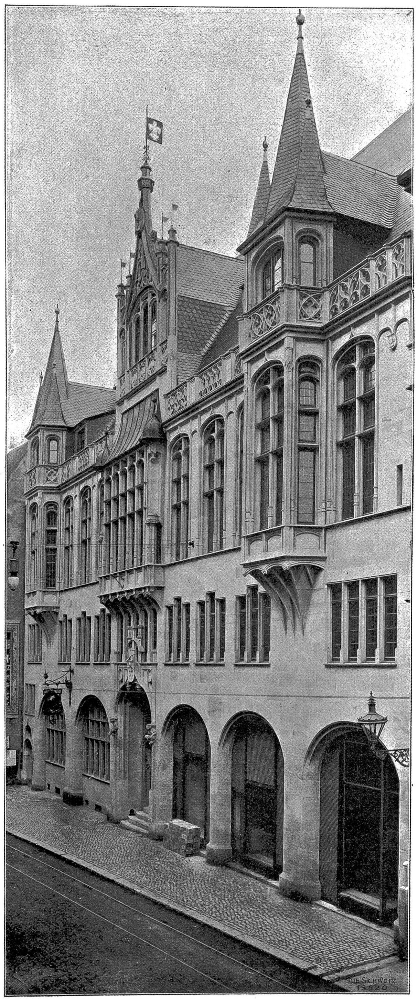
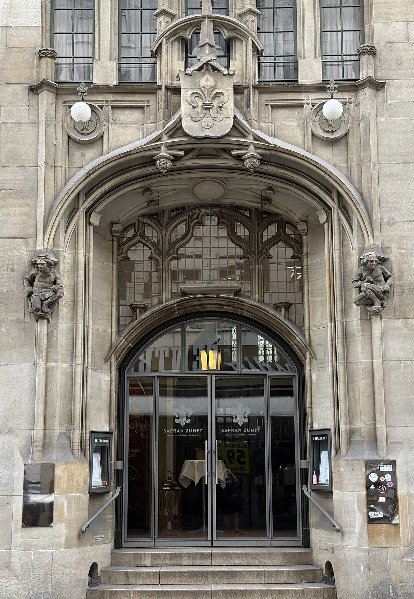
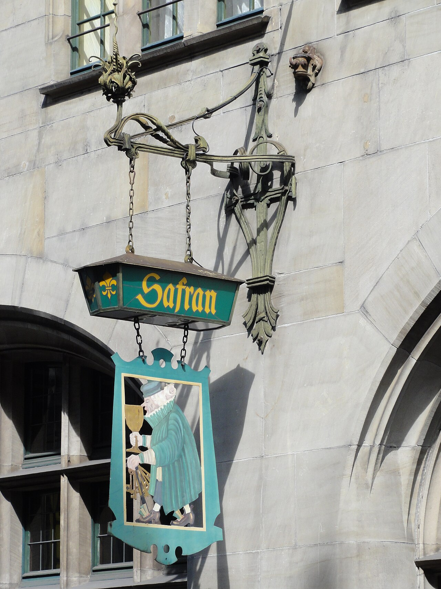
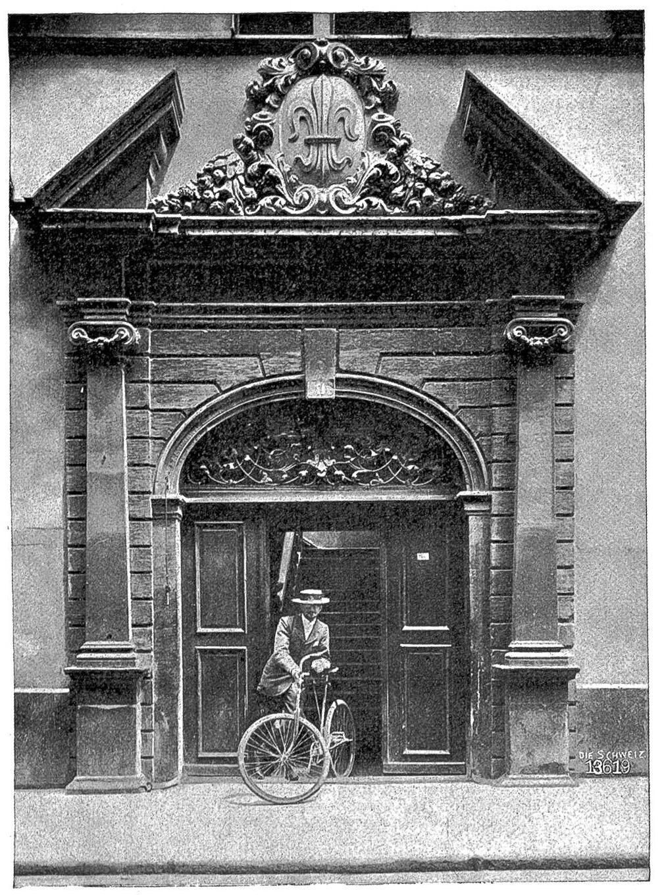
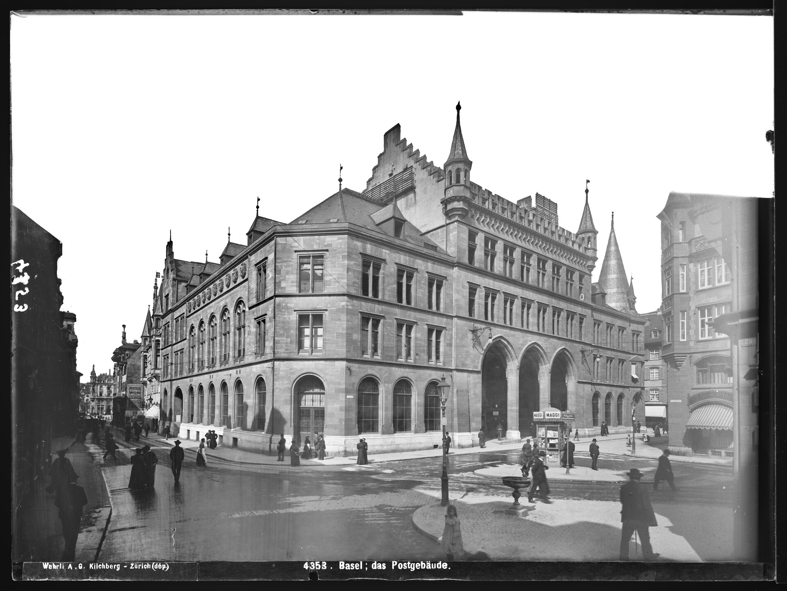
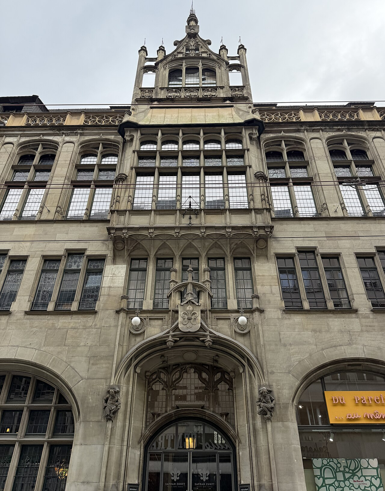
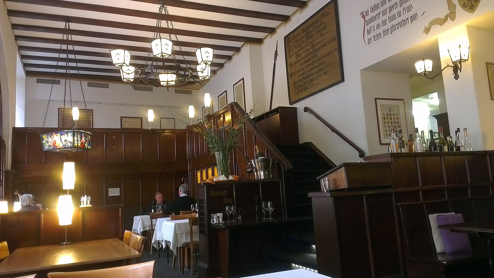

YHLA Thesis · Basel · 2026-11-12
Safran Zunft: the spice merchants' guild and its house
The last guild house standing on Gerbergasse in Basel's old town. Its name comes from saffron, the costliest spice of the Middle Ages, and the present house replaced the medieval one in 1902 when the street was widened.
Drag the handle on the image to move between the old house as remodelled in 1888 and the new house of 1902. Both photographs were printed in the magazine Die Schweiz in 1902; the two viewpoints differ slightly.3


Old house, after 1888 New house, 1902Why a guild
A Zunft is an association of people in the same trade. In medieval Basel nobody could practise a trade without belonging to one. The guild set quality, wages and prices.1
Safran was the guild of the Krämer: retailers of spices and small goods. New trades kept attaching themselves to it, because craftsmen who began to make in Basel what the merchants had been importing joined the merchants' guild. Safran was therefore a collective guild from the start, and it took in the apothecaries and the printers too.2
The guild also carried public duties. It inspected scales, weights and the ell, and ran the gunpowder trade and the powder mills. The watch ordinance of 1374 assigned Safran a stretch of the city wall.1
Trades in the medieval Safran guild
Eighteen of the twenty-six trades in Benjamin Hitz's table, after Simon-Muscheid 1988.2
Why saffron
The name "zu Safran" first appears in 1372, the year of the guild's oldest surviving house rules. Before that it is said to have carried the name of ginger (Ingwer, Imber).1
Two accounts explain it. The guild itself says it took the name of the most precious of all spices. Another record says the guild moved into a house on Gerbergasse called "zum Safran" and adopted the house's name, as several Basel guilds did. The two accounts do not exclude each other, but which came first is not settled.4
The "saffron war" of 1374
In 1374 the nobleman Henman von Bechburg robbed a Basel merchants' transport near Balsthal. The load included several hundredweight of saffron. Basel forces then besieged his castle of Neu-Falkenstein. It was a feud over a highway robbery more than a war, and since the guild's name is recorded two years earlier, the name does not come from this episode.5
The episode became the subject of the murals Emil Schill painted in the guild hall in 1902.


Timeline
1226
The first documented guild charter in Basel goes to the furriers (Kürschner). The Krämer corporation also existed by the 13th century.
1345
The Krämer's meeting room is first recorded: the house "zum Walraven" by the St. Andreas chapel on Andreasplatz. The chapel later became the guild's own.
1372
The name "zu Safran" is first recorded, and the oldest surviving house rules are written.
1374
Henman von Bechburg seizes Basel merchants' saffron near Balsthal and is besieged in his castle of Neu-Falkenstein. In the same year the watch ordinance gives Safran a stretch of the wall.
1382
After the fifteen guild councillors, the fifteen guild masters also enter the council. Guilds now hold 30 of 44 seats.
1423
On 7 January the guild buys the Ballhof from the city for 450 Rhenish gold gulden. It was the store for merchants' bales, and is today's Gerbergasse 11. The guild builds at once.

1474
The printer Michael Wenssler joins Safran. Printing was a free art outside guild control, but printers and papermakers joined a merchants' guild to sell what they made. Johann Amerbach (1481) and Erasmus's printer Johann Froben (1492) are also reported as members.
1529
After iconoclasm and a guild uprising Basel adopts the Reformation. The guild's St. Andreas chapel is stripped. From now on the guilds carry the republican constitution.
1666
Johann Heinrich Keller makes the great walnut buffet for the guild's large room. The piece, 3.7 metres high, is now in the Kunstgewerbemuseum in Berlin.
1798
The Helvetic Revolution abolishes the guild constitution. From 1803 it is partly restored and the guilds survive as electoral bodies.
1875
The new cantonal constitution takes away all guild seats in the Grand Council. From the following year guild assets come under the supervision of the Bürgergemeinde.
1888
After the Birsig stream is covered, the old house is remodelled. The architect Gustav Kelterborn adds a storey and two tall gables; Sam. Baur & Sohn paint the facade.
1899
On 20 January the guild brothers resolve to demolish and rebuild, at three times the cost of a conversion, on condition that the new house clearly show the "character of an old guild house". The invited competition is judged in May.
1902
The new house opens. The guild is said to have moved in on Ash Wednesday, 12 February; another record gives 20 January. Emil Schill paints the murals in the hall.
1979
A 1973 plan to replace the building met opposition from heritage groups. The restoration of 1978 to 1979 removed the stage that had hidden the hall's fireplace and mural.
2002
The centenary. On 27 August the house enters the cantonal register of monuments. It is also listed as an object of national importance (class A) in the federal inventory.
Guilds that ran the city
Basel's guilds were more than trade bodies. They entered the council in 1337 and held two thirds of its seats by 1382. A constitutional change in 1521 fixed their supremacy, and after the Reformation of 1529 the guilds were the city's political structure. Defence rested on them as well.6
There were fifteen guilds historically. Four of them, the merchant guilds, were called Herrenzünfte: Schlüssel, Hausgenossen, Weinleuten and Safran, in that order. The ranking already appears in the oldest council roster, of 1357.7
The revolution of 1798 and the constitution of 1875 ended their political power. Today the guilds are public-law corporations under the Bürgergemeinde. They manage their assets, give grants, and host events for first-time voters and new citizens. Safran has about 320 members, and its first task is keeping this house.8
- 1337
- Fifteen guild representatives enter the council
- 1357
- Oldest council roster; Safran ranked fourth
- 1382
- Guilds hold 30 of 44 seats
- 1521
- Constitutional change secures guild supremacy
- 1529
- Guild uprising and the Reformation
- 1798
- Helvetic Revolution ends the guild constitution
- 1875
- Guilds lose all Grand Council seats
- Today
- Twenty guilds, public-law corporations under the Bürgergemeinde
The old house, 1423 to 1899
The house built in 1423 was a long two-storey building. Behind the facade two houses stood either side of an open courtyard, linked by galleries. The great hall was in the right-hand part, lit by a row of twelve stepped windows; the officers' room (Vorgesetztenstube) was in the part towards the Marktplatz. The central portal led into the courtyard.9
In 1888, when the Birsig stream was covered, the house was remodelled. Gustav Kelterborn added a storey, set two tall gables over the right half and had the whole facade painted. That appearance lasted only twelve years.9
Parts of the old house survive inside the new one. The officers' room was fitted with oak panelling from the old house, and a door overhead by Franz Pergo of 1617 and a cartouche of 1703 are still there.1
- 1The two gables of 1888
- 2The painted facade
- 3Portal to the courtyard
The 1899 competition and the new house
The street is the reason for the new house. In 1898 the council decided to widen lower Gerbergasse to 15 metres, moving the building line back by 3 metres. The old house stood in the way.9
In 1899 the guild invited five Basel offices to a competition. The jury of 24 May awarded no first prize; second prizes went to Linder & Visscher and to Gebr. Stamm. Vischer & Fueter withdrew because they had the Rathaus extension.9
The designer was Gustav Adolf Visscher van Gaasbeek (1859 to 1911), a Dutch architect born in Bandung on Java, who led design in Rudolf Linder's building firm. His competition scheme was a symmetrical facade in Netherlandish and North German Renaissance forms, and the jury saw echoes of the Bremen town hall. The guild had asked for early Renaissance, yet every study he drew afterwards was Gothic. He called the built house Dutch late Gothic.10
Work began in 1900 and finished in 1902. The main post office next door and the Rathaus were growing at the same time. Street widening rebuilt the centre of the old town in historicist dress within one generation.

Reading the facade
Click a number for a note, or pick from the list below to jump to it.
- 1Central gable and guild banner
- 2Tracery balustrade
- 3The tall hall windows
- 4The central oriel
- 5The guild arms
- 6The portal
- 7Six arches
- 8Mosel sandstone
No source that could be read names the sculptor of the facade.

Details
Inside
The guild hall (Zunftsaal) is on the second upper floor and takes the full depth of the street range. The brief first asked for a length of at least 15.5 metres, then at least 18 and if possible 20. The built dimensions were not found; the venue is listed today at 280 square metres.9
A stair stands at one end of the hall and a Gothic fireplace at the other. Franz Baur did the decorative painting, and in 1902 Emil Schill painted the saffron episode of 1374 on the end walls. The windows carry guild arms in glass.3
The officers' room is lined with oak panelling taken from the old house. The ground-floor restaurant was altered in 1941.
What to look for on site
- From the street
- How portal, central oriel and gable line up on one axis, and how tall the hall windows are.
- At the portal
- The figures at the springing of the arch and the arms above.
- In the restaurant
- The two arched windows with stone tracery.
- Worth asking
- Whether the hall upstairs can be seen. The murals and the fireplace are there.

Where the record disagrees
- Opening
- 20 January 1902 (the restaurant) or Ash Wednesday, 12 February (altbasel, INSA). Some books give 1903 or 1900/01 for completion.
- Purchase
- 1423 in most sources, 1424 in one.
- The name
- From the spice, or from a house "zum Safran".
- Schill's murals
- Three (1902 article), two (INSA, the 1979 account) or one (Wikipedia).
- Hall ceiling
- High-vaulted in the 1902 article, a timber ceiling in the 1979 account.
- Old portal
- 1701, early 17th century, or "of 1600 and moved to the Historisches Museum". These may be different pieces.
- The saffron
- The quantity taken in 1374 ranges from "several hundredweight" to about 400 kilograms, and sources differ on who besieged the castle.
- The printers
- The memberships of Amerbach and Froben rest on unfootnoted Wikipedia sentences. Holbein was not in Safran but in the painters' guild zum Himmel.
Sources and images
- 1altbasel.ch, «Die Zunft zu Safran». altbasel.ch/zunft/safran.html
- 2Benjamin Hitz, «Hand-Werk und Lohn-Arbeit», Stadt.Geschichte.Basel 3, Christoph Merian Verlag. doi.org/10.21255/sgb-03.05-238056
- 3«Das neue Zunfthaus zu Safran in Basel», Die Schweiz 6 (1902), S. 421-423. doi.org/10.5169/seals-575524
- 4E. E. Zunft zu Safran, zuenfte-basel.ch/safran.html; Basler Banner 70 (2026), PDF
- 5Historisches Lexikon der Schweiz, «Bechburg, von». hls-dhs-dss.ch; Luise Bardenhewer, Der Safranhandel im Mittelalter, Bonn 1914, S. 55.
- 6altbasel.ch, «Zeittafel». altbasel.ch/zeittafel_1.html; HLS, «Zünfte». hls-dhs-dss.ch
- 7«Liste von Korporationen in Basel», de.wikipedia.org. Link
- 8Bürgergemeinde der Stadt Basel, «Zünfte und Gesellschaften». bgbasel.ch; Zunftordnung 1990, lexfind.ch
- 9Uta Feldges, Markus G. Ritter, «Das Zunfthaus zu Safran», Basler Stadtbuch 1979, S. 103-120. baslerstadtbuch.ch
- 10Kanton Basel-Stadt, Medienmitteilung 27.8.2002. bs.ch; HLS, «Visscher van Gaasbeek, Gustav Adolf». hls-dhs-dss.ch; INSA 2 (1986), S. 157.
Images
Three photographs of 1902: Die Schweiz 6 (1902), ETH-Bibliothek Zürich, E-Periodica; anonymous, published 1902. Staircase, 1912: C. H. Baer, Deutsche Wohn- und Festräume aus sechs Jahrhunderten, public domain. Post office, about 1906: Swiss National Library, EAD-WEHR-4353-B, public domain. Photographs of 2026: Chabe01, CC BY-SA 4.0. 2023: Tilman2007, CC BY-SA 4.0. Sign, 2012: Mattes, CC BY 2.0 de. Portal sculpture, 2015: Fred Romero, CC BY 2.0. Restaurant, 2012: Toraih, CC BY-SA 3.0. All current photographs are from Wikimedia Commons.